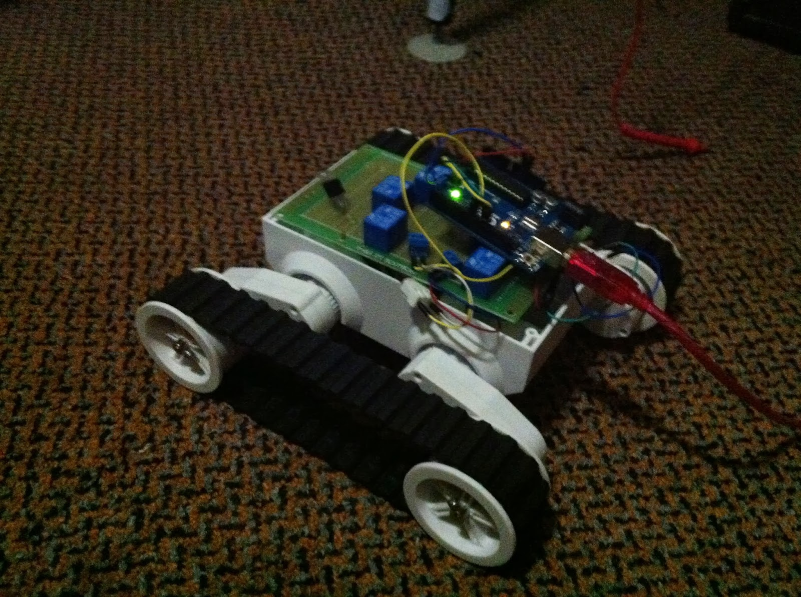

A Software Developer's Experience Building a Robot
Part 2: Tank Treads and Blue Smoke
2013-11-24 Updated 2025-12-31 · 1f8c246Tanked
In my previous post I concluded that legs were not suitable for what I wanted to do and that tank treads, while way overboard, would solve my weight bearing problems. So I ordered a Rover 5.
Unforeseen Requirements
When I received the rover base I realised that I didn't have a motor controller, and since I didn't fully understand how an H-Bridge worked I decided to build a motor controller from 6 relays and 4 transistors. After prototyping on a breadboard I moved it to a proto-board.
The soldering was a whole new experience. I am sure that I spent about 6 hours on this thing and it looks nothing like the work of someone who is experienced. You couldn't fire tracer rounds in this department, because in hardware land, test-fix cycles take a whole lot longer.

When I was finally done, I wrote a quick Node script and could happily listen to the clicky sound of the relays as the rover moved forward.
Blue Smoke
The next day I was all excited to hook up the Raspberry Pi and didn't check the polarity of my battery connector before I connected it. When I saw the blue smoke I had read about on the internet, I knew my transistors were fried.
The problem then with having soldered really close together is that I couldn't just replace the transistors, the joints were all over the place.
Lessons Learned
There are 3 things that I have learned from this experience:
- Polarity matters
- Hardware is a whole different ballgame
- Sometimes it's just easier to buy things
I have since just bought a motor controller, because the time it would take to repair my home built motor controller would be better spent on other aspects of the project: building a robot.
Originally posted on Blogspot